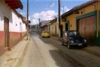

| Mexico |

|
Jeudi 8 novembre -
On a un peu de mal avec le décalage horaire. A 5H00, on est réveillé.
Lire la suite ...
|
| Uxmal |

|
Samedi 10 novembre -
Il est 5h00 du matin et les coqs du centre ville de mexico chantent le lever
du jour! Hé oui, il y a des coqs partout, c'est pour les combats de coqs paraît-il.
Lire la suite ...
|
| Chichen Itza |

|
Lundi 12 novembre -
Autant se débarraser des visites des vieilles pierres tout de suite. Enfin,
je veux dire, on est tellement impatients, on piaffe tellement, qu'on ne peut
s'empêcher d'enchaîner Uxmal avec Chichen Itza, l'autre site important
du Yucatan.
Lire la suite ...
|
| Isla Mujeres |
|
|
Mecredi 14 novembre -
On n'est pas du genre raciste, on n'a rien contre les nord américains en tant
qu'individus. Mais la politique impérialiste de ce pays nous agace il est vrai
un peu parfois.
Lire la suite ...
|
| Palenque |
|
|
Samedi 17 novembre -
Il est 8H30, le bus arrive à Palenque. On est gelé mais à l'heure.
Lire la suite ...
|
| San Cristobal de las Casas |
|

|
Dimanche 18 novembre -
C'est vrai que le climat n'est pas aussi chaud que dans le Yucatan. On supporte
facilement pantalon et petite laine.
Lire la suite ...
|
| San Juan de Chamula |

|
Mardi 20 novembre -
On a lu que San Juan de Chamula pouvait décevoir quelquefois. D'abord parce
que ce village "indigène" comme ils disent ici, est très touristique.
Lire la suite ...
|
| Zipolite |

|
Mercredi 21 novembre -
Aujourd'hui, on se balade à travers al ville, on retourne déjeuner au marché
puis dîner au Salsa Verde sans oublier de s'arrêter manger quelques quesadillas
chez nos petites dames. Bref, une journée gastronomie et flânerie!
Jeudi 22 novembre -
7H30, on monte dans le bus pour Potchutla.
Lire la suite ...
|